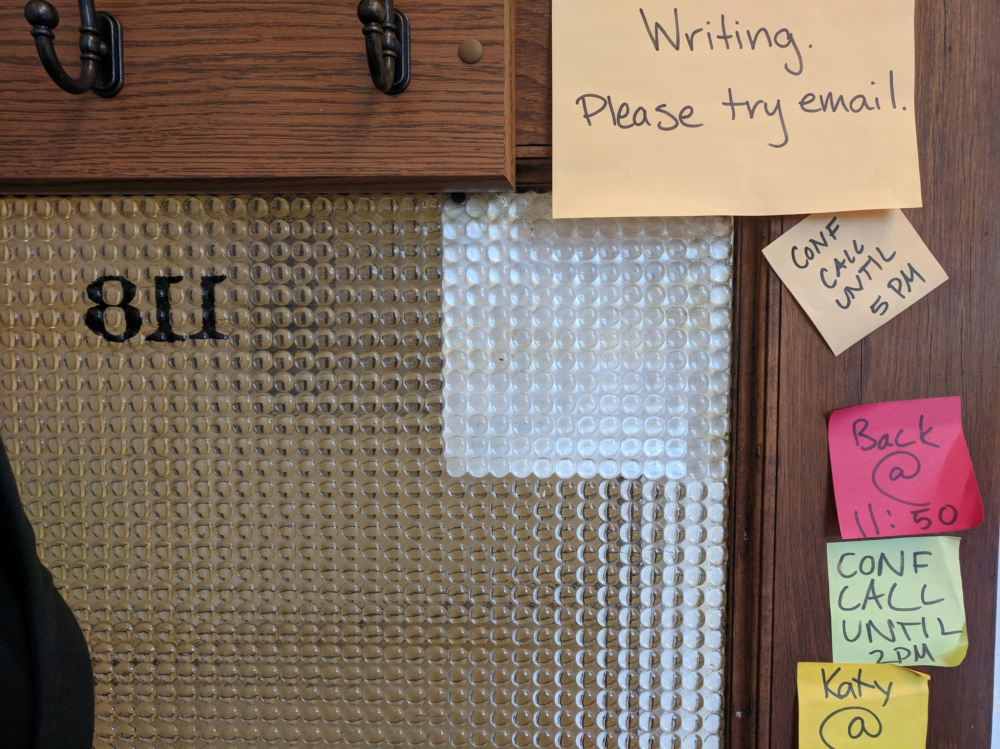

Effective Writing (at home?)
Kathryn (Katy) Huff
Webinar, Grad SWE
May 20, 2020


“ In science one tries to tell people, in such a way as to be understood by everyone, something that no one ever knew before. But in poetry, it's the exact opposite. ”
- Paul Dirac
Resources
- Writing in the Sciences MOOC - Kristin Sanani
- ARFC Writing Checklist
- Chicago Manual of Style
Strategies That Work For Me
- Build your text around figures and data
- Write and edit separately.
- Each new reader/reviewer adds clarity.
- Review it yourself, tomorrow..
- Avoid Weasel Words
- Brevity, active voice, and more brevity
“Dear Herr Hahn,
Much respect for the consistency you are showing in not writing. Anything else would not be 'timely' would it?”
- Lise Meitner, 1917
Resources
- How to Write a Lot - Paul Silvia
- Getting Things Done - David Allen
- The Checklist Manifesto - Atul Gawande
- Pomodoro Technique
- Bullet Journaling
- Habitica/Todoist/Looper/Trello/etc.
- Accountabilibuddies
Writing Habits
- Good: Wake up whenever, write when you find time
- Better: Write on a schedule, give yourself rewards.
- Best: Write at the same time every day, with a quiet accountabilibuddy, or with a timer, set SMART goals, reward yourself.
“I’ve always objected to doing anything over again if I had already done it once.”- Grace Brewster Mary Hopper
Resources
- Professor Hacker Blog
- The Not-So-Short Guide to $LaTeX$
- GitHub
- StackOverflow (caveat emptor)
Strategies that Work for Me
- vim
- jupyter, markdown, rst, $\LaTeX$
- Zotero, $BibTeX$
- GitHub template repositories
- Zenodo, Figshare
- pandoc, Doxygen, sphinx
- matplotlib, yt, paraview
- jekyll, reveal.js, beamer
- voice-to-text plugins
- Kindle, GoodNotes, GoodReader
Word Processing
- Good: stone tablet, microsoft word
- Better: word with track changes, open office
- Best: plain text markup with version control and a makefile
Tools: LaTeX, markdown, restructured text
Plotting
- Good: custom formatting, clickable GUI
- Better: plot format templates (excel, mathematica)
- Best: scripted plotting, matplotlib, gnuplot, etc.
Reference Management
- Good: copy citations from google scholar, memorize citation styles (Chicago, MLA, IEEE...)
- Better: maintain a semi-infinite .bib file of all papers you've ever read.
- Best: Zotero, Mendeley, BibDesk, EndNote, RefWorks
Backing Up Files
- Good: hope
- Better: nightly emails
- Best: remote version control
Version Control Systems: cvs, svn, hg, git
Managing Changes
- Good: naming convention
- Better: clever naming convention
- Best: local version control

Merging Collaborative Work
- Good: single master copy, waiting
- Better: emails and patches
- Best: remote version control

Distribution Control
- Good: "email to request access"
- Better: license file
- Best: license file, citation file, DOI, forkable repository
Example: joss.theoj.org
“We lose ourselves in what we read, only to return to ourselves, transformed and part of a more expansive world.”- Judith Butler
Resources
- Set up Google Scholar notifications
- Read MS and PhD theses in your field
- See "The Professor Is In" for faculty applications
- Read grant proposals (ask your advisor)
- Read books: philosophy, science fiction, nonfiction, biographies, popular science, historical fiction...
- Read magazines, blogs, tweets, the New Yorker, the Economist, the NYTimes, the Washington Post, Mother Jones, the Wall Street Journal.
- Abandon Facebook, join GoodReads.
Links
THE END
Katy Huff
katyhuff.github.io/2020-05-20-writing
Effective Writing (at home?) by Kathryn Huff is licensed under a Creative Commons Attribution 4.0 International License.
Based on a work at http://katyhuff.github.io/2020-05-20-writing.